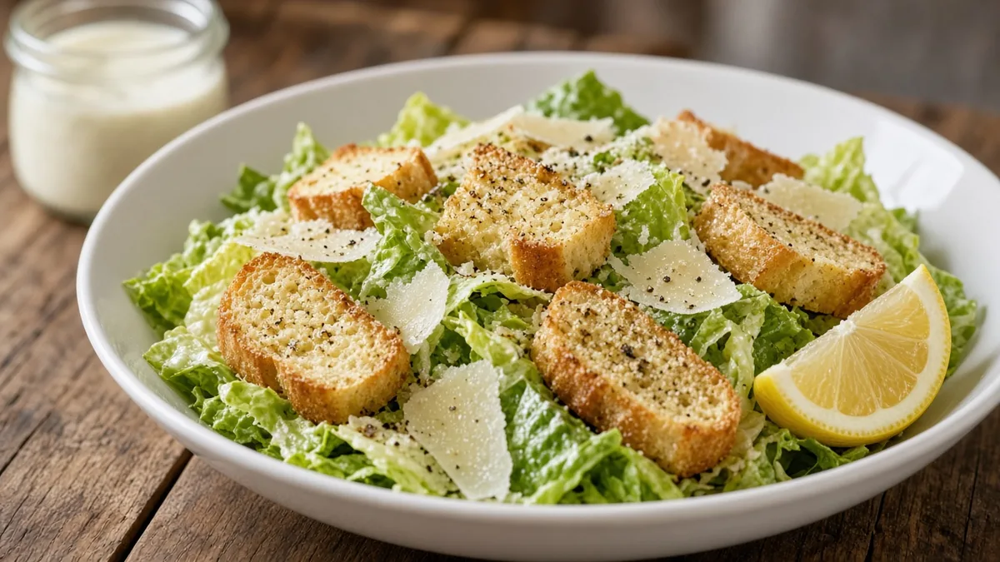
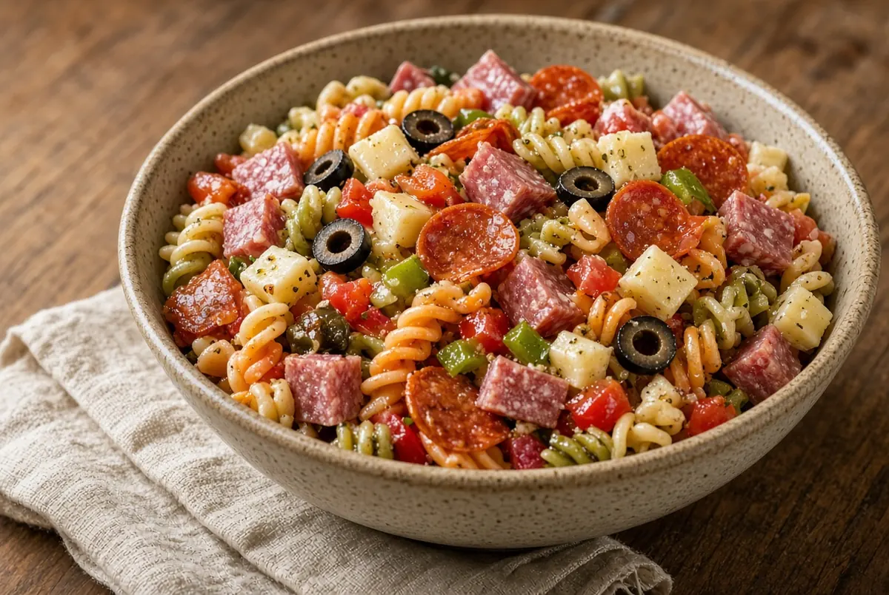
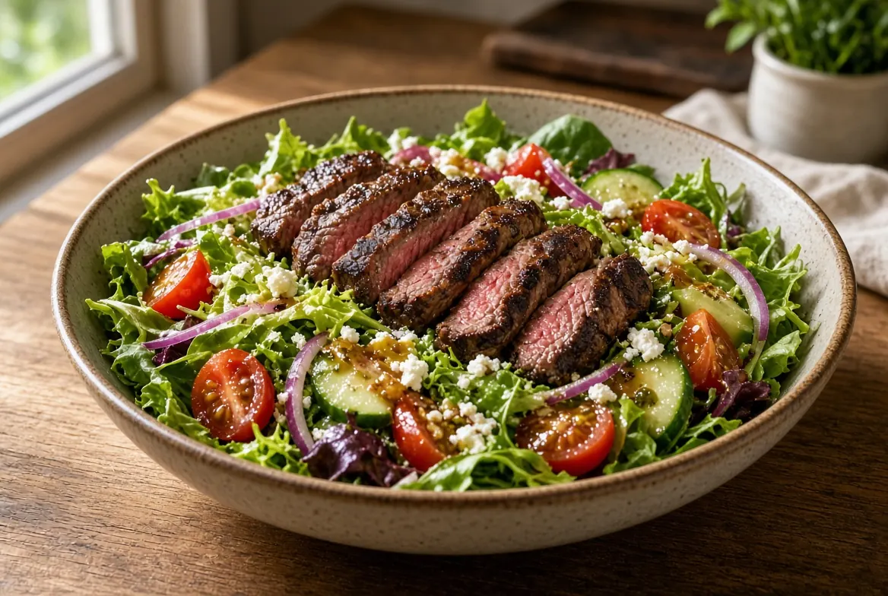
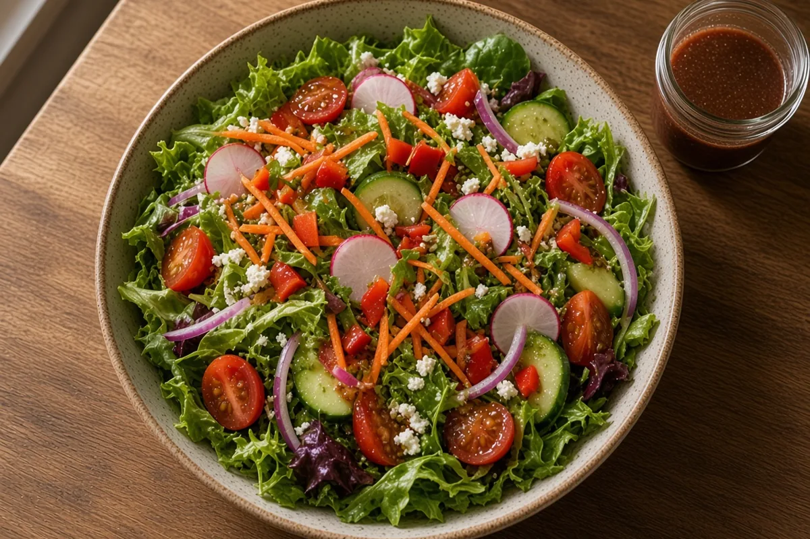
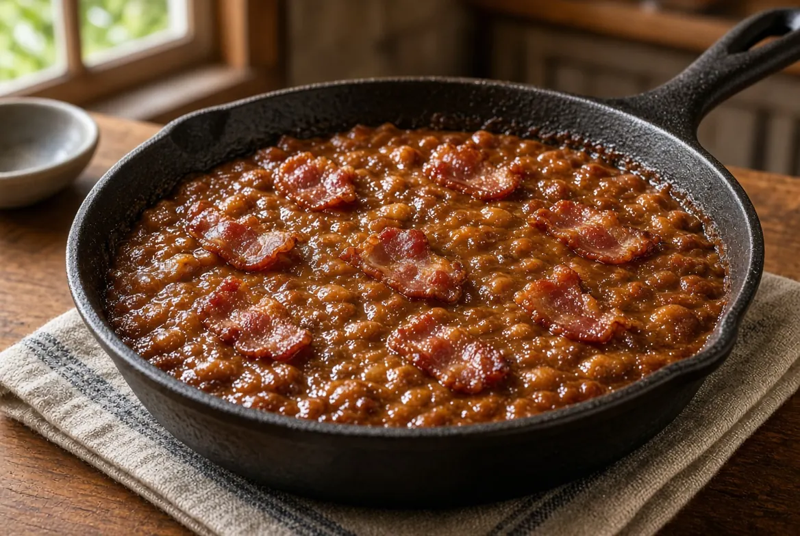

- Sides & saladsThe Best Coleslaw
- Sides & saladsSouthern Fried Cabbage with Bacon
- Sides & saladsGarlic Butter Mixed Vegetables
- Sides & saladsOven-Roasted Asparagus
- Sides & saladsCrockpot Pinto Beans
- Sides & saladsMexican Tomato Rice
- Sides & saladsQuick Broccoli and Cheese
- Sides & saladsSyracuse Salt Potatoes
- Sides & saladsClassic Creamy Southern Coleslaw
- Sides & saladsButtery Garlic Green Beans
- Sides & saladsDelicious, Creamy Mashed Potatoes
- Sides & saladsCilantro Lime Rice
- Sides & saladsCreamy Cheddar Cheese Grits
- Sides & saladsHoney Roasted Carrots
- Sides & saladsMushroom Rice Pilaf
- Sides & saladsEasy Southern Potato Salad
- Sides & saladsCrispy Brussels Sprouts with Honey and Bacon
- Sides & saladsCrispy Brussels Sprouts with Soy-Ginger Glaze
- Sides & saladsCrispy Garlic Butter Parmesan Smashed Potatoes

Sides & saladsClassic Caesar Salad with Garlic Parmesan Croutons
Sides & saladsAntipasto Pasta Salad
Sides & saladsSeared Steak Salad
Sides & saladsGarden Salad
Sides & saladsSouthern Baked Beans